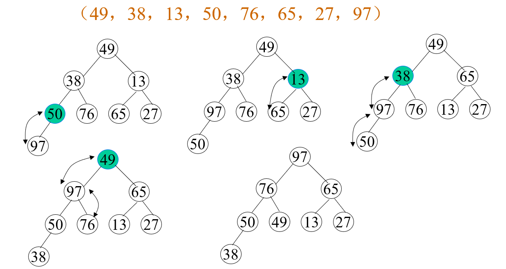
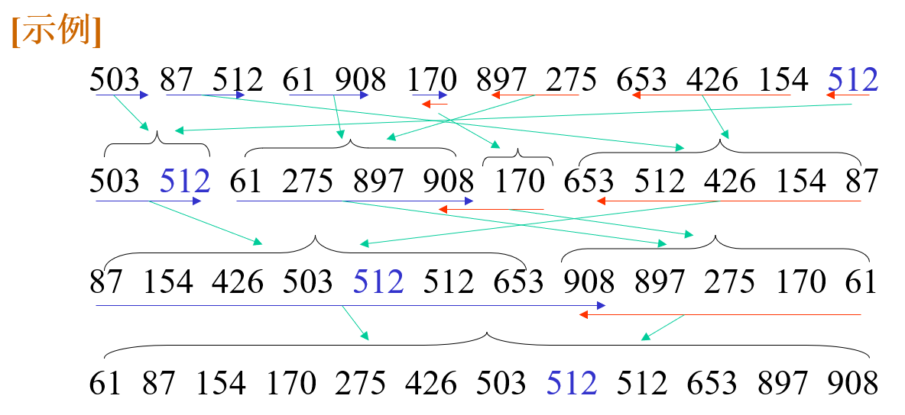

内部排序
排序
评价排序算法的主要标准
首先是算法的时间开销：
- 比较关键字的次数
- 移动记录的次数
算法运行的时间还和输入实例的初始状态有关，分情况：
- 最好
- 最坏
- 平均
然后是算法的空间开销，这上面的比较相对比较简单，主要就是考虑算法中所需的辅助变量占据的空间。
在讨论中我们先做一些约定：
- 采用顺序存储
- 按记录关键字非递减排序，关键字为整数
插入排序
将序列分为两部分，前一部分为有序序列，后一部分为无序序列，通过遍历将无序序列中的元素插入有序序列中合适的位置上，直到无序序列为空。
直接插入排序
利用顺序查找找到元素的插入位置。
void InsertSort(std::vector<int>& list)
{
int length = list.size();
for (int i = 1; i < length; i++)
{
if (list[i] < list[i - 1])
{
// 只有当前值小于目前有序序列的最大值时才处理
int temp = list[i];
int j;
// 依次比较有序序列和当前元素
// 如果大于就将有序序列的元素向后面移动一位
// 当找到第一个不大于的元素时
// 在它的后面插入元素
for (j = i - 1; j >= 0; j--)
{
if (list[j] > temp)
{
list[j + 1] = list[j];
}
else
{
break;
}
}
list[j + 1] = temp;
}
}
}
性能分析
-
在最好的情况下，也就是原始的数据就是按照正序来排列的：
-
在最坏的情况下，原始的数据按照逆序来排列：
总的来说，算法的时间复杂度在这个级别，辅助空间复杂度是。
改进措施
直接插入排序算法还存在不少的优化空间。
-
折半插入排序
将循环中每一次在有序序列上的查找从顺序查找改为折半查找，有效的减少了关键字之间的比较次数
-
2路插入排序
设置一个个原始序列相同大小的辅助空间，首先将原始序列中的第一个元素复制到辅助序列中，遍历序列中的元素，同辅助空间的第一个元素比较大小，如果大于就插入在第一个元素之后的序列中，如果小于就插入到第一个元素之前的序列之中。通过辅助变量空间的变大可以有效的减少记录移动的次数。
说实话，我没看懂
-
表插入排序
构造静态链表，通过改变指针来代替移动记录的操作，效果同上面一个优化的方法一样，都是减少记录移动的次数。
希尔排序
对待整体的序列先做“宏观”的调整，再进行“微观”的调整。
先选定一个记录下标的增量，将整个记录序列按增量从第一个记录划分为若干组，对每组使用直接插入排序的方法；然后减小增量的值，不断的重复上述的过程，直到增量的大小等于1。
void ShellSort(std::vector<int>& list)
{
int length = list.size();
for (int delta = length >> 1; delta > 0; delta = delta >> 1)
{
for (int i = delta; i < length; i++)
{
int temp = list[i];
int j = 0;
for (j = i - delta; j >= 0 and list[j] > temp; j = j - delta)
{
list[j + delta] = list[j];
}
list[j + delta] = temp;
}
}
}
性能分析
希尔排序的性能主要取决于增量序列的选择，在上面的实现中我是直接使用的折半序列，目前还没有关于最佳序列选择的定论，但是一般的决定原则是：
- 最后一个增量是1
- 避免增量序列中的值，尤其是相邻的值，有公因子
经过在现实世界中的实验结果，在比较大的时候，比较和移动的次数约在到之间。
希尔排序不算是稳定的排序算法。
交换排序
冒泡排序
将两个相邻记录的关键词进行比较，若为逆序则交换两者的位置，小者往上浮，大者往下沉。
void BubbleSort(std::vector<int>& list)
{
int length = list.size();
// 设置sort可以避免一些不必要的循环
bool sorted = false;
for (int i = 1; i < length and !sorted; i++)
{
sorted = true;
for (int j = 0; j < length - i; j++)
{
if (list[j] > list[j + 1])
{
int swap = list[j];
list[j] = list[j + 1];
list[j + 1] = swap;
sorted = false;
}
}
}
}
性能分析
在最好情况下，即原始数据就按照正序排序：
在最坏的情况下，原始数据按照逆序排序，
总的来说，冒泡排序的时间复杂度为，辅助空间的复杂度为。
快速排序
指定枢轴（或者称为支点、基准记录），通过一次排序将其放在正确的位置上，而且这个元素将待排的记录分为独立的两个部分，使得在枢轴左侧的记录都小于等于枢轴，在枢轴右侧的记录都大于等于枢轴。对枢轴左右两侧的元素重复这个过程，直到形成的子序列中只剩下一个记录或者是没有记录。
分治的算法原理
- 分解：将原问题分解为若干个子问题
- 求解：递归的求解子问题，如果子问题的规模足够小，则直接求解
- 组合：将各子问题的解组合成原问题的解
void QuickSortR(std::vector<int>& list, int begin, int end)
{
if (begin < end)
{
int key = list[begin];
int low = begin;
int high = end;
while (low < high)
{
while(low < high and list[high] >= key)
{
high--;
}
list[low] = list[high];
while (low < high and list[low] <= key)
{
low++;
}
list[high] = list[low];
}
list[low] = key;
QuickSortR(list, begin, low - 1);
QuickSortR(list, low + 1, end);
}
}
void QuickSort(std::vector<int>& list)
{
QuickSortR(list, 0, list.size() - 1);
}
性能分析
对于快速排序而言，有序的情况反而是最坏的情况，在当输入的数据就是正序或者逆序时，排序的时间复杂度为。而快速排序最好的情况是每次划分的结果是枢轴的左右两个子序列的长度基本相同，在这种情况下时间复杂度为。
在平均情况下，算法的时间复杂度为。如果仅就平均时间复杂度而言，快速排序被认为是较好的一种内部排序算法。
关于辅助空间的复杂度：在最好情况下为，在最坏的情况下为。
选择排序
简单选择排序
每次从待排序列中选出关键字最小的记录作为有序序列中最后的一个记录，直到最后一个记录为止。
void SelectSort(std::vector<int>& list)
{
int length = list.size();
for (int i = 0; i < length; i++)
{
int j = i;
for (int k = i + 1; k < length; k++)
{
if (list[j] > list[k])
{
j = k;
}
}
if (i != j)
{
int swap = list[i];
list[i] = list[j];
list[j] = swap;
}
}
}
性能分析
总的比较册次数和记录初始的排列状态没有关系，都是，不过移动的次数就和初始状态有关系，在最好的条件下，也就是初始记录就是正序时，移动的次数为，在最坏的条件下，也就是初始记录就是完全逆序的情况下：。
总的来说，平均的时间复杂度为, 而辅助空间复杂度为。
树形选择排序

堆排序
- 较直接选择排序减少重复排序
- 较树形选择排序减少辅助存储空间（仅需一个）
二叉堆的定义
个关键字的序列当且仅当满足下列条件之一：
- 且 ，称为小根堆
- 且 ，称为大根堆
堆的定义和完全二叉树的顺序存储结构比较相似。
基本思想
- 将初始文件建成一个大根堆
- 将大根堆的堆顶，也就是最大的元素，同最末尾的元素交换
- 将新形成的无序部分调整为大根堆
- 重复2~3步，直到所有元素都排序完成
在基本思想中就存在两个问题需要我们解决：
- 如何从一个无序的序列建成一个堆
- 如何在输出堆顶元素之后，调整剩余元素，使之成为一个新的堆
我们可以通过筛选的方法，在将堆顶元素输出之后的堆调整为新的大顶堆：

在从一群无序的元素建立一个大顶堆的时候，就从低到高依次筛选建立大顶堆：

算法实现
首先我们需要实现从一个无序的堆建立大根堆的函数：
void HeapAdjust(std::vector<int>& heap, int begin, int end)
{
// 初始化父节点 子节点的位置
int dad = begin;
int son = dad * 2 + 1;
while (son <= end)
{
if (son + 1 <= end and heap[son] < heap[son + 1])
{
// 选择左右节点中较大者
son++;
}
if (heap[dad] > heap[son])
{
break;
}
else
{
// 交换父子节点
int temp = heap[dad];
heap[dad] = heap[son];
heap[son] = temp;
// 继续下一个父节点
dad = son;
son = dad * 2 + 1;
}
}
}
在拥有上面这个调整函数之后，我们就可以写出堆排序：
void HeapSort(std::vector<int>& heap)
{
int length = heap.size();
// 将无序堆初始化为大根堆
// 从最后一个父节点开始调整
for (int i = length / 2 - 1; i >= 0; i--)
{
HeapAdjust(heap, i, length - 1);
}
for (int i = length - 1; i > 0; i--)
{
// 交换最大的元素和末尾的元素
int temp = heap[i];
heap[i] = heap[0];
heap[0] = temp;
// 重新将前面的无序堆调整为大根堆
HeapAdjust(heap, 0, i - 1);
}
}
性能分析
在最坏的情况下，算法的时间复杂度为
- 在建立初始堆时，比较的次数不超过
- 在反复调整堆时，比较的次数不会超过
通过在实际环境中的反复实验，平均性能比较接近于算法的最坏时间复杂度。
算法的辅助空间复杂度为
这是一种不稳定的排序算法，在对于数据较大的序列进行排序时用处比较大。
归并排序
将两个或者两个以上同序的序列归并为一个序列的操作成为归并。
两路归并排序
首先将待排序列看作是个长度为1的有序子序列，两两归并成为长度为2的有序子序列；将上一步得到的子序列两两归并；……；直到合并成为一个序列为止。
性能分析
在任何情况下算法的时间复杂度都是，空间的复杂度都是，很少用于内部排序。
自然两路归并排序
以游程（自然的有序段）作为子序列进行归并，可以比直接两路归并更加有效。

基数排序
通过“分配”和“收集”过程来实现排序，时间复杂度可以突破基于关键字比较一类方法的下界，达到。
基数排序的算法思想来自于多关键字排序中的思想。在多关键字排序中存在两个排序思想：最高位优先法(MSD)和最低位优先法(LSD)